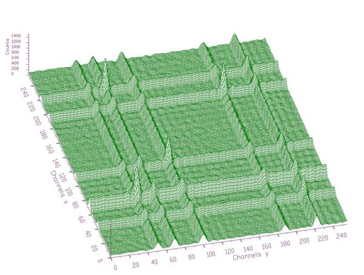

class TSpectrum2Transform: public TObject
THIS CLASS CONTAINS 2-DIMENSIONAL ORTHOGONAL TRANSFORM FUNCTIONS. These functions were written by: Miroslav Morhac Institute of Physics Slovak Academy of Sciences Dubravska cesta 9, 842 28 BRATISLAVA SLOVAKIA email:fyzimiro@savba.sk, fax:+421 7 54772479 The original code in C has been repackaged as a C++ class by R.Brun The algorithms in this class have been published in the following references: [1] C.V. Hampton, B. Lian, Wm. C. McHarris: Fast-Fourier-transform spectral enhancement techniques for gamma-ray spectroscopy.NIM A353 (1994) 280-284. [2] Morhac M., Matousek V., New adaptive Cosine-Walsh transform and its application to nuclear data compression, IEEE Transactions on Signal Processing 48 (2000) 2693. [3] Morhac M., Matousek V., Data compression using new fast adaptive Cosine-Haar transforms, Digital Signal Processing 8 (1998) 63. [4] Morhac M., Matousek V.: Multidimensional nuclear data compression using fast adaptive Walsh-Haar transform. Acta Physica Slovaca 51 (2001) 307.
Function Members (Methods)
| TSpectrum2Transform() | |
| TSpectrum2Transform(const TSpectrum2Transform&) | |
| TSpectrum2Transform(Int_t sizeX, Int_t sizeY) | |
| virtual | ~TSpectrum2Transform() |
| void | TObject::AbstractMethod(const char* method) const |
| virtual void | TObject::AppendPad(Option_t* option = "") |
| virtual void | TObject::Browse(TBrowser* b) |
| static TClass* | Class() |
| virtual const char* | TObject::ClassName() const |
| virtual void | TObject::Clear(Option_t* = "") |
| virtual TObject* | TObject::Clone(const char* newname = "") const |
| virtual Int_t | TObject::Compare(const TObject* obj) const |
| virtual void | TObject::Copy(TObject& object) const |
| virtual void | TObject::Delete(Option_t* option = "")MENU |
| virtual Int_t | TObject::DistancetoPrimitive(Int_t px, Int_t py) |
| virtual void | TObject::Draw(Option_t* option = "") |
| virtual void | TObject::DrawClass() constMENU |
| virtual TObject* | TObject::DrawClone(Option_t* option = "") constMENU |
| virtual void | TObject::Dump() constMENU |
| void | Enhance(const Float_t** fSource, Float_t** fDest) |
| virtual void | TObject::Error(const char* method, const char* msgfmt) const |
| virtual void | TObject::Execute(const char* method, const char* params, Int_t* error = 0) |
| virtual void | TObject::Execute(TMethod* method, TObjArray* params, Int_t* error = 0) |
| virtual void | TObject::ExecuteEvent(Int_t event, Int_t px, Int_t py) |
| virtual void | TObject::Fatal(const char* method, const char* msgfmt) const |
| void | FilterZonal(const Float_t** fSource, Float_t** fDest) |
| virtual TObject* | TObject::FindObject(const char* name) const |
| virtual TObject* | TObject::FindObject(const TObject* obj) const |
| virtual Option_t* | TObject::GetDrawOption() const |
| static Long_t | TObject::GetDtorOnly() |
| virtual const char* | TObject::GetIconName() const |
| virtual const char* | TObject::GetName() const |
| virtual char* | TObject::GetObjectInfo(Int_t px, Int_t py) const |
| static Bool_t | TObject::GetObjectStat() |
| virtual Option_t* | TObject::GetOption() const |
| virtual const char* | TObject::GetTitle() const |
| virtual UInt_t | TObject::GetUniqueID() const |
| virtual Bool_t | TObject::HandleTimer(TTimer* timer) |
| virtual ULong_t | TObject::Hash() const |
| virtual void | TObject::Info(const char* method, const char* msgfmt) const |
| virtual Bool_t | TObject::InheritsFrom(const char* classname) const |
| virtual Bool_t | TObject::InheritsFrom(const TClass* cl) const |
| virtual void | TObject::Inspect() constMENU |
| void | TObject::InvertBit(UInt_t f) |
| virtual TClass* | IsA() const |
| virtual Bool_t | TObject::IsEqual(const TObject* obj) const |
| virtual Bool_t | TObject::IsFolder() const |
| Bool_t | TObject::IsOnHeap() const |
| virtual Bool_t | TObject::IsSortable() const |
| Bool_t | TObject::IsZombie() const |
| virtual void | TObject::ls(Option_t* option = "") const |
| void | TObject::MayNotUse(const char* method) const |
| virtual Bool_t | TObject::Notify() |
| void | TObject::Obsolete(const char* method, const char* asOfVers, const char* removedFromVers) const |
| static void | TObject::operator delete(void* ptr) |
| static void | TObject::operator delete(void* ptr, void* vp) |
| static void | TObject::operator delete[](void* ptr) |
| static void | TObject::operator delete[](void* ptr, void* vp) |
| void* | TObject::operator new(size_t sz) |
| void* | TObject::operator new(size_t sz, void* vp) |
| void* | TObject::operator new[](size_t sz) |
| void* | TObject::operator new[](size_t sz, void* vp) |
| TSpectrum2Transform& | operator=(const TSpectrum2Transform&) |
| virtual void | TObject::Paint(Option_t* option = "") |
| virtual void | TObject::Pop() |
| virtual void | TObject::Print(Option_t* option = "") const |
| virtual Int_t | TObject::Read(const char* name) |
| virtual void | TObject::RecursiveRemove(TObject* obj) |
| void | TObject::ResetBit(UInt_t f) |
| virtual void | TObject::SaveAs(const char* filename = "", Option_t* option = "") constMENU |
| virtual void | TObject::SavePrimitive(ostream& out, Option_t* option = "") |
| void | TObject::SetBit(UInt_t f) |
| void | TObject::SetBit(UInt_t f, Bool_t set) |
| void | SetDirection(Int_t direction) |
| virtual void | TObject::SetDrawOption(Option_t* option = "")MENU |
| static void | TObject::SetDtorOnly(void* obj) |
| void | SetEnhanceCoeff(Float_t enhanceCoeff) |
| void | SetFilterCoeff(Float_t filterCoeff) |
| static void | TObject::SetObjectStat(Bool_t stat) |
| void | SetRegion(Int_t xmin, Int_t xmax, Int_t ymin, Int_t ymax) |
| void | SetTransformType(Int_t transType, Int_t degree) |
| virtual void | TObject::SetUniqueID(UInt_t uid) |
| virtual void | ShowMembers(TMemberInspector& insp) |
| virtual void | Streamer(TBuffer& b) |
| void | StreamerNVirtual(TBuffer& b) |
| virtual void | TObject::SysError(const char* method, const char* msgfmt) const |
| Bool_t | TObject::TestBit(UInt_t f) const |
| Int_t | TObject::TestBits(UInt_t f) const |
| void | Transform(const Float_t** fSource, Float_t** fDest) |
| virtual void | TObject::UseCurrentStyle() |
| virtual void | TObject::Warning(const char* method, const char* msgfmt) const |
| virtual Int_t | TObject::Write(const char* name = 0, Int_t option = 0, Int_t bufsize = 0) |
| virtual Int_t | TObject::Write(const char* name = 0, Int_t option = 0, Int_t bufsize = 0) const |
| void | BitReverse(Float_t* working_space, Int_t num) |
| void | BitReverseHaar(Float_t* working_space, Int_t shift, Int_t num, Int_t start) |
| virtual void | TObject::DoError(int level, const char* location, const char* fmt, va_list va) const |
| void | FourCos2(Float_t** working_matrix, Float_t* working_vector, Int_t numx, Int_t numy, Int_t direction, Int_t type) |
| void | Fourier(Float_t* working_space, Int_t num, Int_t hartley, Int_t direction, Int_t zt_clear) |
| void | General2(Float_t** working_matrix, Float_t* working_vector, Int_t numx, Int_t numy, Int_t direction, Int_t type, Int_t degree) |
| Int_t | GeneralExe(Float_t* working_space, Int_t zt_clear, Int_t num, Int_t degree, Int_t type) |
| Int_t | GeneralInv(Float_t* working_space, Int_t num, Int_t degree, Int_t type) |
| void | Haar(Float_t* working_space, Int_t num, Int_t direction) |
| void | HaarWalsh2(Float_t** working_matrix, Float_t* working_vector, Int_t numx, Int_t numy, Int_t direction, Int_t type) |
| void | TObject::MakeZombie() |
| void | Walsh(Float_t* working_space, Int_t num) |
Data Members
| enum { | kTransformHaar | |
| kTransformWalsh | ||
| kTransformCos | ||
| kTransformSin | ||
| kTransformFourier | ||
| kTransformHartley | ||
| kTransformFourierWalsh | ||
| kTransformFourierHaar | ||
| kTransformWalshHaar | ||
| kTransformCosWalsh | ||
| kTransformCosHaar | ||
| kTransformSinWalsh | ||
| kTransformSinHaar | ||
| kTransformForward | ||
| kTransformInverse | ||
| }; | ||
| enum TObject::EStatusBits { | kCanDelete | |
| kMustCleanup | ||
| kObjInCanvas | ||
| kIsReferenced | ||
| kHasUUID | ||
| kCannotPick | ||
| kNoContextMenu | ||
| kInvalidObject | ||
| }; | ||
| enum TObject::[unnamed] { | kIsOnHeap | |
| kNotDeleted | ||
| kZombie | ||
| kBitMask | ||
| kSingleKey | ||
| kOverwrite | ||
| kWriteDelete | ||
| }; |
| Int_t | fDegree | degree of mixed transform, applies only for Fourier-Walsh, Fourier-Haar, Walsh-Haar, Cosine-Walsh, Cosine-Haar, Sine-Walsh, Sine-Haar transforms |
| Int_t | fDirection | forward or inverse transform |
| Float_t | fEnhanceCoeff | multiplication coefficient applied in enhanced region; |
| Float_t | fFilterCoeff | value set in the filtered region |
| Int_t | fSizeX | x length of transformed data |
| Int_t | fSizeY | y length of transformed data |
| Int_t | fTransformType | type of transformation (Haar, Walsh, Cosine, Sine, Fourier, Hartley, Fourier-Walsh, Fourier-Haar, Walsh-Haar, Cosine-Walsh, Cosine-Haar, Sine-Walsh, Sine-Haar) |
| Int_t | fXmax | last channel x of filtered or enhanced region |
| Int_t | fXmin | first channel x of filtered or enhanced region |
| Int_t | fYmax | last channel y of filtered or enhanced region |
| Int_t | fYmin | first channel y of filtered or enhanced region |
Class Charts
{kind=link}
{kind=link}
{kind=link}
{kind=link}
Function documentation
the constructor creates TSpectrum2Transform object. Its sizes must be > than zero and must be power of 2. It sets default transform type to be Cosine transform. Transform parameters can be changed using setter functions.
AUXILIARY FUNCION This function calculates Haar transform of a part of data Function parameters: -working_space-pointer to vector of transformed data -num-length of processed data -direction-forward or inverse transform
AUXILIARY FUNCION This function calculates Walsh transform of a part of data Function parameters: -working_space-pointer to vector of transformed data -num-length of processed data
AUXILIARY FUNCION This function carries out bir-reverse reordering of data Function parameters: -working_space-pointer to vector of processed data -num-length of processed data
AUXILIARY FUNCION This function calculates Fourier based transform of a part of data Function parameters: -working_space-pointer to vector of transformed data -num-length of processed data -hartley-1 if it is Hartley transform, 0 othewise -direction-forward or inverse transform
AUXILIARY FUNCION This function carries out bir-reverse reordering for Haar transform Function parameters: -working_space-pointer to vector of processed data -shift-shift of position of processing -start-initial position of processed data -num-length of processed data
AUXILIARY FUNCION This function calculates generalized (mixed) transforms of different degrees Function parameters: -working_space-pointer to vector of transformed data -zt_clear-flag to clear imaginary data before staring -num-length of processed data -degree-degree of transform (see manual) -type-type of mixed transform (see manual)
AUXILIARY FUNCION This function calculates inverse generalized (mixed) transforms Function parameters: -working_space-pointer to vector of transformed data -num-length of processed data -degree-degree of transform (see manual) -type-type of mixed transform (see manual)
AUXILIARY FUNCION This function calculates 2D Haar and Walsh transforms Function parameters: -working_matrix-pointer to matrix of transformed data -working_vector-pointer to vector where the data are processed -numx,numy-lengths of processed data -direction-forward or inverse -type-type of transform (see manual)
AUXILIARY FUNCION This function calculates 2D Fourier based transforms Function parameters: -working_matrix-pointer to matrix of transformed data -working_vector-pointer to vector where the data are processed -numx,numy-lengths of processed data -direction-forward or inverse -type-type of transform (see manual)
AUXILIARY FUNCION This function calculates generalized (mixed) 2D transforms Function parameters: -working_matrix-pointer to matrix of transformed data -working_vector-pointer to vector where the data are processed -numx,numy-lengths of processed data -direction-forward or inverse -type-type of transform (see manual) -degree-degree of transform (see manual)
TWO-DIMENSIONAL TRANSFORM FUNCTION This function transforms the source spectrum. The calling program should fill in input parameters. Transformed data are written into dest spectrum. Function parameters: fSource-pointer to the matrix of source spectrum, its size should be fSizex*fSizey except for inverse FOURIER, FOUR-WALSH, FOUR-HAAR transform. These need fSizex*2*fSizey length to supply real and imaginary coefficients. fDest-pointer to the matrix of destination data, its size should be fSizex*fSizey except for direct FOURIER, FOUR-WALSh, FOUR-HAAR. These need fSizex*2*fSizey length to store real and imaginary coefficients fSizex,fSizey-basic dimensions of source and dest spectra
Transform methods
Goal: to analyze experimental data using orthogonal transforms
orthogonal transforms can be successfully used for the processing of nuclear spectra (not only)
they can be used to remove high frequency noise, to increase signal-to-background ratio as well as to enhance low intensity components [1], to carry out e.g. Fourier analysis etc.
we have implemented the function for the calculation of the commonly used orthogonal transforms as well as functions for the filtration and enhancement of experimental data
Function:
void TSpectrumTransform2::Transform(const float **fSource, float **fDest)
This function transforms the source spectrum according to the given input parameters. Transformed data are written into dest spectrum. Before the Transform function is called the class must be created by constructor and the type of the transform as well as some other parameters must be set using a set of setter functions:
Member variables of TSpectrumTransform2 class:
fSource-pointer to the matrix of source spectrum. Its lengths should be equal to the fSizex, fSizey parameters except for inverse FOURIER, FOUR-WALSH, FOUR-HAAR transforms. These need 2*fSizex*fSizey length to supply real and imaginary coefficients.
fDest-pointer to the matrix of destination spectrum. Its lengths should be equal to the fSizex, fSizey parameters except for inverse FOURIER, FOUR-WALSH, FOUR-HAAR transforms. These need 2*fSizex*fSizey length to store real and imaginary coefficients.
fSizeX,fSizeY-basic lengths of the source and dest spectra. They should be power
of 2.
fType-type of transform
Classic transforms:
kTransformHaar
kTransformWalsh
kTransformCos
kTransformSin
kTransformFourier
kTransformHartley
Mixed transforms:
kTransformFourierWalsh
kTransformFourierHaar
kTransformWalshHaar
kTransformCosWalsh
kTransformCosHaar
kTransformSinWalsh
kTransformSinHaar
fDirection-direction-transform direction (forward, inverse)
kTransformForward
kTransformInverse
fDegree-applies only for mixed transforms [2], [3], [4].
Allowed range  .
.
References:
[1] C.V. Hampton, B. Lian, Wm. C. McHarris: Fast-Fourier-transform spectral enhancement techniques for gamma-ray spectroscopy. NIM A353 (1994) 280-284.
[2] Morhč M., Matouek V., New adaptive Cosine-Walsh transform and its application to nuclear data compression, IEEE Transactions on Signal Processing 48 (2000) 2693.
[3] Morhč M., Matouek V., Data compression using new fast adaptive Cosine-Haar transforms, Digital Signal Processing 8 (1998) 63.
[4] Morhč M., Matouek V.: Multidimensional nuclear data compression using fast adaptive Walsh-Haar transform. Acta Physica Slovaca 51 (2001) 307.
Example 1 script Transform2.c:
Fig. 1 Original two-dimensional noisy spectrum

Fig. 2 Transformed spectrum from Fig. 1 using Cosine transform. Energy of the trasnsformed data is concentrated around the beginning of the coordinate system
Script:
// Example to illustrate Transform function (class TSpectrumTransform2).
// To execute this example, do
// root > .x Transform2.C
void Transform2() {
Int_t i, j;
Int_t nbinsx = 256;
Int_t nbinsy = 256;
Int_t xmin = 0;
Int_t xmax = nbinsx;
Int_t ymin = 0;
Int_t ymax = nbinsy;
Float_t ** source = new float *[nbinsx];
Float_t ** dest = new float *[nbinsx];
for (i=0;i<nbinsx;i++)
source[i]=new float[nbinsy];
for (i=0;i<nbinsx;i++)
dest[i]=new float[nbinsy];
TH2F *trans = new TH2F("trans","Background estimation",nbinsx,xmin,xmax,nbinsy,ymin,ymax);
TFile *f = new TFile("TSpectrum2.root");
trans=(TH2F*) f->Get("back3;1");
TCanvas *Tr = new TCanvas("Transform","Illustation of transform function",10,10,1000,700);
for (i = 0; i < nbinsx; i++){
for (j = 0; j < nbinsy; j++){
source[i][j] = trans->GetBinContent(i + 1,j + 1);
}
}
TSpectrumTransform2 *t = new TSpectrumTransform2(256,256);
t->SetTransformType(t->kTransformCos,0);
t->SetDirection(t->kTransformForward);
t->Transform(source,dest);
for (i = 0; i < nbinsx; i++){
for (j = 0; j < nbinsy; j++){
trans->SetBinContent(i + 1, j + 1,dest[i][j]);
}
}
trans->Draw("SURF");
}
TWO-DIMENSIONAL FILTER ZONAL FUNCTION This function transforms the source spectrum. The calling program should fill in input parameters. Then it sets transformed coefficients in the given region to the given filter_coeff and transforms it back Filtered data are written into dest spectrum. Function parameters: fSource-pointer to the matrix of source spectrum, its size should be fSizeX*fSizeY fDest-pointer to the matrix of destination data, its size should be fSizeX*fSizeY
Example of zonal filtering
Function:
void TSpectrumTransform2::FilterZonal(const float **fSource, float **fDest)
This function transforms the source spectrum (for details see Transform function). Before the FilterZonal function is called the class must be created by constructor and the type of the transform as well as some other parameters must be set using a set of setter functions. The FilterZonal function sets transformed coefficients in the given region (fXmin, fXmax) to the given fFilterCoeff and transforms it back. Filtered data are written into dest spectrum.
Example script Fitler2.c:
Fig. 1 Original two-dimensional noisy spectrum
Fig. 2 Filtered spectrum using Cosine transform and zonal filtration (channels in regions (128-255)x(0-255) and (0-255)x(128-255) were set to 0).
Script:
// Example to illustrate zonal filtration (class TSpectrumTransform2).
// To execute this example, do
// root > .x Filter2.C
void Filter2() {
Int_t i, j;
Int_t nbinsx = 256;
Int_t nbinsy = 256;
Int_t xmin = 0;
Int_t xmax = nbinsx;
Int_t ymin = 0;
Int_t ymax = nbinsy;
Float_t ** source = new float *[nbinsx];
Float_t ** dest = new float *[nbinsx];
for (i=0;i<nbinsx;i++)
source[i]=new float[nbinsy];
for (i=0;i<nbinsx;i++)
dest[i]=new float[nbinsy];
TH2F *trans = new TH2F("trans","Background estimation",nbinsx,xmin,xmax,nbinsy,ymin,ymax);
TFile *f = new TFile("TSpectrum2.root");
trans=(TH2F*) f->Get("back3;1");
TCanvas *Tr = new TCanvas("Transform","Illustation of transform function",10,10,1000,700);
for (i = 0; i < nbinsx; i++){
for (j = 0; j < nbinsy; j++){
source[i][j] = trans->GetBinContent(i + 1,j + 1);
}
}
TSpectrumTransform2 *t = new TSpectrumTransform2(256,256);
t->SetTransformType(t->kTransformCos,0);
t->SetRegion(0,255,128,255);
t->FilterZonal(source,dest);
for (i = 0; i < nbinsx; i++){
for (j = 0; j < nbinsy; j++){
source[i][j] = dest[i][j];
}
}
t->SetRegion(128,255,0,255);
t->FilterZonal(source,dest);
trans->Draw("SURF");
}
TWO-DIMENSIONAL ENHANCE ZONAL FUNCTION This function transforms the source spectrum. The calling program should fill in input parameters. Then it multiplies transformed coefficients in the given region by the given enhance_coeff and transforms it back Function parameters: fSource-pointer to the matrix of source spectrum, its size should be fSizeX*fSizeY fDest-pointer to the matrix of destination data, its size should be fSizeX*fSizeY
Example of enhancement
Function:
void TSpectrumTransform2::Enhance(const float **fSource, float **fDest)
This function transforms the source spectrum (for details see Transform function). Before the Enhance function is called the class must be created by constructor and the type of the transform as well as some other parameters must be set using a set of setter functions. The Enhance function multiplies transformed coefficients in the given region (fXmin, fXmax, fYmin, fYmax) by the given fEnhancCoeff and transforms it back. Enhanced data are written into dest spectrum.
Example script Enhance2.c:

Fig. 1 Original two-dimensional noisy spectrum

Fig. 2 Enhanced spectrum of the data from Fig. 1 using Cosine transform (channels in region (0-63)x(0-63) were multiplied by 5)
Script:
// Example to illustrate enhancement (class TSpectrumTransform2).
// To execute this example, do
// root > .x Enhance2.C
void Enhance2() {
Int_t i, j;
Int_t nbinsx = 256;
Int_t nbinsy = 256;
Int_t xmin = 0;
Int_t xmax = nbinsx;
Int_t ymin = 0;
Int_t ymax = nbinsy;
Float_t ** source = new float *[nbinsx];
Float_t ** dest = new float *[nbinsx];
for (i=0;i<nbinsx;i++)
source[i]=new float[nbinsy];
for (i=0;i<nbinsx;i++)
dest[i]=new float[nbinsy];
TH2F *trans = new TH2F("trans","Background estimation",nbinsx,xmin,xmax,nbinsy,ymin,ymax);
TFile *f = new TFile("TSpectrum2.root");
trans=(TH2F*) f->Get("back3;1");
TCanvas *Tr = new TCanvas("Transform","Illustation of transform function",10,10,1000,700);
for (i = 0; i < nbinsx; i++){
for (j = 0; j < nbinsy; j++){
source[i][j] = trans->GetBinContent(i + 1,j + 1);
}
}
TSpectrumTransform2 *t = new TSpectrumTransform2(256,256);
t->SetTransformType(t->kTransformCos,0);
t->SetRegion(0,63,0,63);
t->SetEnhanceCoeff(5);
t->Enhance(source,dest);
trans->Draw("SURF");
}
SETTER FUNCION
This function sets the following parameters for transform:
-transType - type of transform (Haar, Walsh, Cosine, Sine, Fourier, Hartley, Fourier-Walsh, Fourier-Haar, Walsh-Haar, Cosine-Walsh, Cosine-Haar, Sine-Walsh, Sine-Haar)
-degree - degree of mixed transform, applies only for Fourier-Walsh, Fourier-Haar, Walsh-Haar, Cosine-Walsh, Cosine-Haar, Sine-Walsh, Sine-Haar transforms
SETTER FUNCION
This function sets the filtering or enhancement region:
-xmin, xmax, ymin, ymax
SETTER FUNCION
This function sets the direction of the transform:
-direction (forward or inverse)
SETTER FUNCION
This function sets the filter coefficient:
-filterCoeff - after the transform the filtered region (xmin, xmax, ymin, ymax) is replaced by this coefficient. Applies only for filtereng operation.
SETTER FUNCION
This function sets the enhancement coefficient:
-enhanceCoeff - after the transform the enhanced region (xmin, xmax, ymin, ymax) is multiplied by this coefficient. Applies only for enhancement operation.